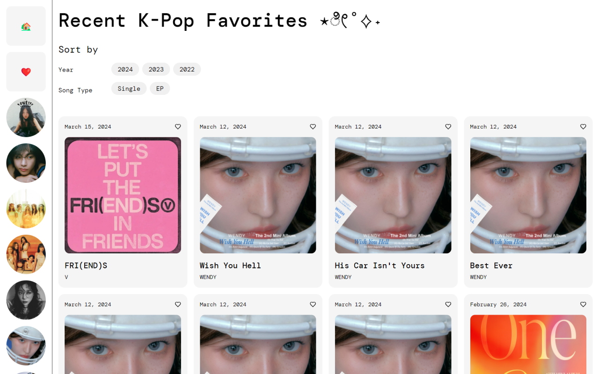

React Development Assignment
React
HTML/CSS
frontend development
website design
Overview
The main objective of this assignment was to gain a stronger sense of frontend development by creating a React application. I created a website with K-pop songs curated by me where users could browse and filter through.
This project marks my very first time using React, so there were many technical challenges I faced throughout the project since I also have minimal experience with JavaScript.
Mar 2024 - Apr 2024
3 weeks
Providence, RI
React
HTML/CSS
Figma
Competitive Analysis
To start off the project, I analyzed the favoriting function or counterpart of several popular websites across social media, e-commerce, and music listening.
Instagram ↗ Etsy ↗ Pinterest ↗ Spotify ↗I then selected 7 features to perform a competitive analysis on. I made sure to select diverse features to analyze in order to gain a more comprehensive understanding of each website. These features covered aspects of functionality, visual design, and accessibility.
| Etsy | Spotify | |||
|---|---|---|---|---|
| Favorites page layout | Standard grid | Standard grid | Masonry grid | List |
| Interaction overview | Can like posts | Can save items to Favorites and Add to collection | Can save pins in different boards and star pins within the board | Can add songs to Liked Songs |
| Tooltip | ✅ Like Unlike |
❌ | ❌ Button with “Save” text |
✅ Save to Your Library Remove from Your Library |
| Confirmation message | ❌ | ✅ | ✅ | ✅ |
| Can access favorites from navigation | ❌ More -> Your activity |
✅ | ❌ Your profile |
✅ |
| Filters | ✅ By Date Buttons and dropdowns |
✅ By search Input field |
✅ By type Can also change viewing options |
❌ Can only change viewing options |
| Reset filters | ✅ By clicking the Reset button |
✅ By clicking the X in the input field |
❌ Can only filter back to All Pins |
❌ |
Since I usually use most of these websites in app form on my phone, it was interesting to see how some of the desktop versions felt much less intuitive.
Instagram: I find it misleading that a user cannot access their liked posts directly through the Instagram sidebar, yet the sidebar contains a heart icon paired with the text "Notifications". This becomes even more of an issue when one decreases the screen size and the text disappears, leaving only the heart icon, which we intuitively think refers to "likes".
Etsy: I was surprised to discover that overall, Etsy had the most successful favoriting function in the variety of options it offered. Similar to Pinterest, users could save items to either a default Favorites folder or create their own, enabling them to organize their favorited items. Etsy was the only website with a search input field, which makes sense as the only e-commerce website out of the four that needs to handle more complicated filters through seaarch queries.
Pinterest: The design of Pinterest was effective since the user can easily organize their pins and also drag and drop UI elements to really customize their boards. However, I found the process for saving a pin and viewing it to be confusing because Pinterest allows the user to save saved pins and also star saved pins within boards. In this case, saving a pin in Pinterest is comparable to adding a song in Spotify to a playlist.
Spotify: I noticed some discrepencies between the Spotify website, which I was analyzing, and the Spotify desktop application. In terms of filtering, while the Spotify website does have any filters, the application allows the user to sort by Title, Artist, Album, Date added, and also filter by the "vibes" of the songs. If the same functionality was on the Spotify website, this would be very effective.
From a user's standpoint, I found the following elements most helpful during my process of favoriting an item:
- Direct access to Favorites through the navigation
- Confirmation message when user favorites an item
- Diverse filtering options
- Discoverable Reset filters
For my own interface, I wanted to build a music app with popular K-Pop songs I like that were released in the last couple of years. I planned to use Spotify ↗ as my main source of inspiration for visual design, where there I used a left sidebar and a main right side. In terms of functionality, I wanted to be able to filter each song by artist, release year, and song type. Additionally, I wanted to implement a way for users to favorite and unfavorite songs, which will act as another filter.
Organization of Components
I used the following components to organize my code:
- 🃏 Card: This component represents each song displayed on the interface. I populated my cards using my own database file that contained all necessary information about each song.
- 🔘 Buttons: This component represents each pill-shaped button filter at the top of the page which allows the user to filter the selection of songs by year and song type.
- 👤 Icons: This component represents each individual artist icon button in the left sidebar which allows the user to only see songs by the artist of their choice. Icons can be used in combination with Buttons.
Flow of Data
To briefly touch on the structure of my application, I called my Buttons component in my Nav class, which was then called in App. I called my Card component in App. I called my Icons component in by Sidebar class, which is called by App. The Sidebar class also displays the Home and Favorites button classes and Artist classes, which calls the Icons component.
I passed down the following data through my components:
- songs: This represented the array of songs in my database. I used this in App to populate my Cards with information and ensure that the filters applied would affect which cards were being displayed.
- onFavoriteClick: This was a function I created in my Card component, which was called in my App class to keep track of when a card was favorited or unfavorited. The song url was used as the unique identifier for each card.
I incorporated 3 types of filters and an favoriting aggregator. The user can filter by year, song type, and artist. The year and song type filters can be used in combination with each other, but users can only select one year and one song type together max - they cannot select multiple years together. The user filter the songs by artist and then filter by year and song type within that. Users can favorite any song card and view their liked songs by clicking on the Favorites button in the left sidebar. The Home button right above the Favorites button completely clear all the filters that have been applied.
Each button with the exception of the artist Icons and Home button is a toggle button, which allows the user to apply a filter with one click and remove the filter with another click.
Final Development
Takeaways
This was a very challenging project given my lack of background in React, but I had a lot of fun creating this music filtering app. I learned a lot about useStates, components, props, and how to abstract and better organize my code.
I had initially added useStates for my pill buttons so that the user would at least know which filters they applied, however these visual indicators were removed as soon as I added functionality and I was unable to figure out how to combine both. In my next projects, I hope to not compromise usability for functionality.
If I had more time and a deeper understanding of React and JavaScript principles, I would add a clear filters button that simply clears all the filters applied on the page. For example, if an artist Icon is clicked and a year and/or song type filter was applied, the clear filters button should remove the year and song type filters and only display all the songs by that artist.
Although there are many bugs in this app, I'm satisfied with the work I was able to accomplis within the given timeframe.